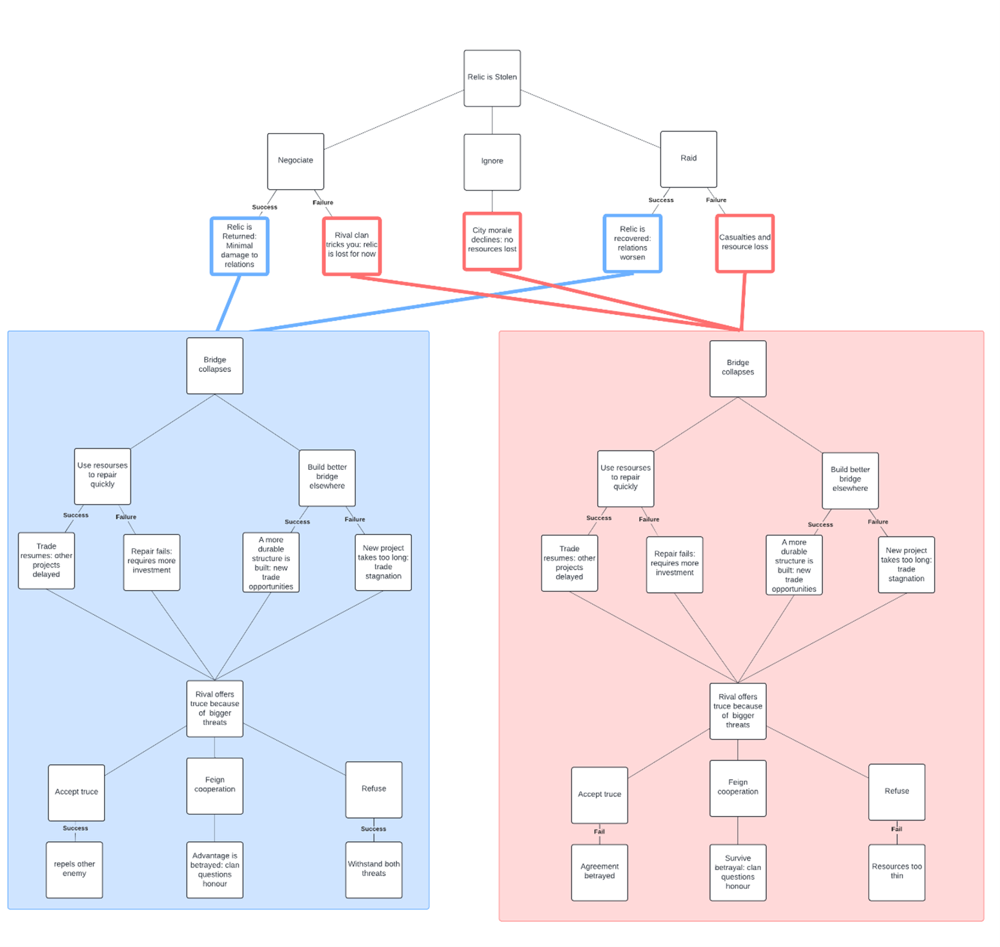
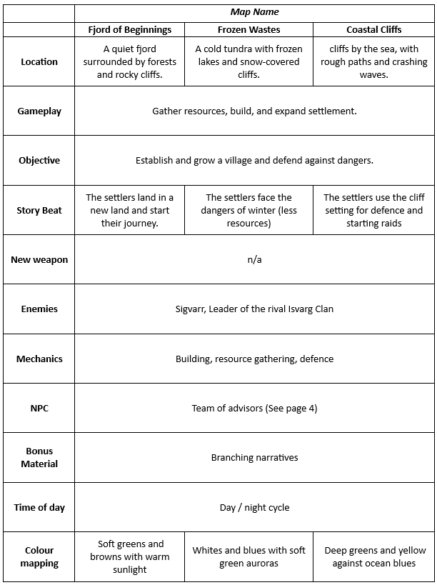

In the age when myths and legends walk the earth, a small Viking clan led by a young chieftain (named by the player) settles on the rugged shores of an uncharted northern land. The village is modest, built with simple wooden structures amidst towering pines and icy fjords. The clan faces the relentless challenges of the wild: harsh winters, scarce resources, and lurking dangers in the untamed wilderness. While struggling to combat the natural, you also must survive the wrath of the gods.
Determined to survive and prosper, the chieftain inspires their people to harness the land's resources. They begin to explore the surrounding territories, discovering fertile grounds, rich fishing waters, and hidden mineral deposits. The villagers learn new skills, advancing from rudimentary huts to sturdy longhouses, and from footpaths to cobblestone roads. Trade routes are established with distant tribes, bringing in innovative technologies and cultural exchanges.
A nearby clan leader, Sigvarr, contacts them. He is aggressive and claims the new Viking clan is encroaching on his land, and they need to pay him an absurd amount of money. They cannot afford to pay him and so a vicious rivalry ensues.
The chieftain interacts with the other clans nearby, some forming allegiances, others forming indifferences or rivalries. The chieftain is encouraged by their people to make the most out of every relationship formed.
A sacred relic, said to bring prosperity to Norrvik, is stolen by a rival clan. The Chieftain must decide how to retrieve it, with advisors offering different solutions. Ronald, The Raider, immediately tries to declare war on the rival clan, suggesting a raid against the rival clan, threatening all its inhabitants, including the women and children. Astrid, The Shield, suggests trying to negotiate, focusing solely on diplomatic relations and the clan’s reputation in Norrvik. Whereas Harald, The Steward, says to ignore it so to not waste resources on such endeavours. If the relic is not retrieved, the chance of a God’s Wrath (where a natural disaster happens i.e. Storm, flood, drought) is increased by 5%.
A vital bridge connecting Norrvik’s trade routes collapses, disrupting the settlement. Advisors disagree on how to proceed. Solveig, The Keeper, wants to get trade back up and running as soon as possible and suggests diverting all resources to repairing it. Kari, The Planner, wants to make the most out of the situation and suggests building a more advanced bridge in its place. Revna, The Navigator, wants to take the opportunity to explore and offers to find a new location for the bridge herself.
Sigvarr, chieftain of the Isvarg clan, offers a temporary truce, claiming a greater enemy threatens both clans. The Chieftain must decide whether to trust him. Frey, The Gothi, suggests accepting the truce, claiming that the Gods will protect them from any harm. However, if the tome was not retrieved then Sigvarr will betray the agreement. Ronald, The Raider, wants to “tough it out” and take on both enemies at once. This has a 50% chance of success without the tome. Astrid, The Shield, wants to have the best competitive advantage by betraying the agreement. This has a 75% chance of success with the tome and 50% without. If an event is failed, half of the clan's resources are diminished.
The clans' resources have depleted but they have gained many resources from the Isvarg clan. This is used to repair and upgrade buildings as well as building new ones entirely.
The chieftain is now living in relative peace, with only the random acts of the gods to worry about. They can either choose to send their heir off to create their own clan (the player starts a new settlement in a different area) or to continue their life as normal
Narrative Diagram |
Beat Chart |